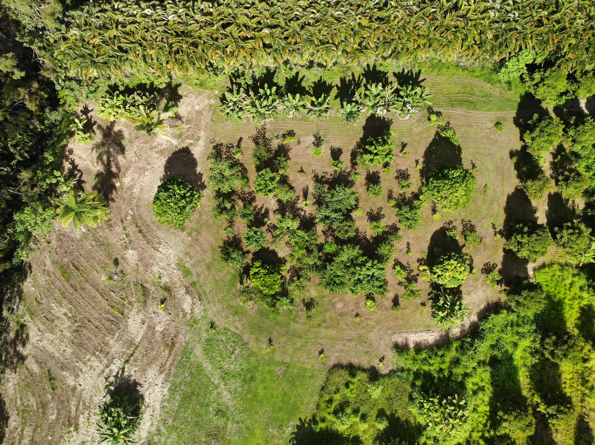

Edible Landscaping & Farm Management
From backyard gardens to working farms — designed, installed, and managed.
Natural Abundance designs and manages edible landscapes and organic farms on the Big Island — building systems that work with the land, grow food, and get better with time.
Whether you have a backyard you'd love to fill with fruit trees or acreage ready for organic conversion, we bring the expertise, the plants, and the hands-on care to make it happen.
Learn more about our story →Custom food forests, fruit tree orchards, and tropical gardens tailored to your land.
Ongoing care, soil building, and harvest management for productive organic systems.
Responsible clearing that preserves topsoil and prepares your land for planting.
Build biologically active soil through Korean Natural Farming practices — no synthetic inputs, just living systems.
"The project Erik helped me with turned out beautifully. His care and attention to detail shine through his work. He checks in and follows up, which I believe comes from his genuine care for the land, plants and people."
We read the landscape — slope, soil, water, wind — and design systems that thrive naturally.
Healthy soil is the foundation of everything. We build it through compost, mulch, and care.
Every planting plan is designed to produce for decades, not just seasons.
Let's talk about what your land can become.
Free consultations for Big Island properties.
Schedule Your Free Consultation